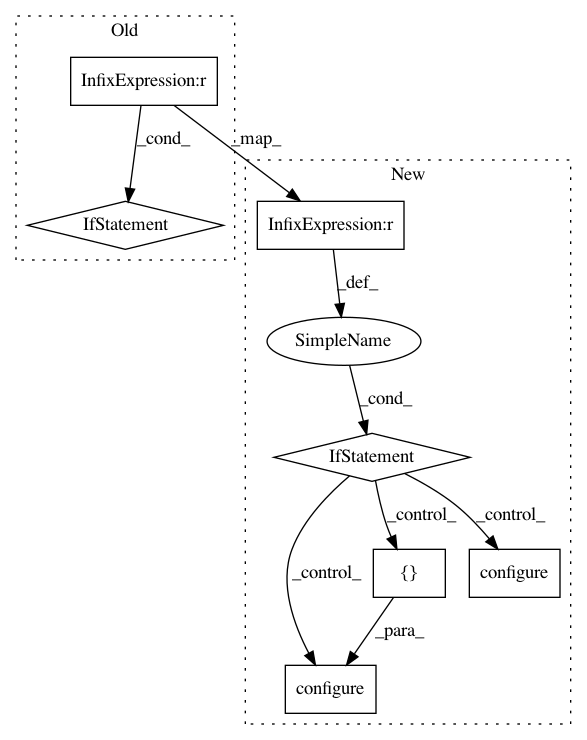

ac2ea4f31f24edd617700bf8f8627ffeb6b193b0,baselines/trpo_mpi/run_mujoco.py,,train,#Any#Any#Any#,16
Before Change
sess.__enter__()
rank = MPI.COMM_WORLD.Get_rank()
if rank != 0:
logger.set_level(logger.DISABLED)
workerseed = seed + 10000 * MPI.COMM_WORLD.Get_rank()
set_global_seeds(workerseed)
env = gym.make(env_id)
def policy_fn(name, ob_space, ac_space):
After Change
sess.__enter__()
rank = MPI.COMM_WORLD.Get_rank()
if rank == 0:
logger.configure()
else:
logger.configure(format_strs=[])
logger.set_level(logger.DISABLED)
workerseed = seed + 10000 * MPI.COMM_WORLD.Get_rank()
set_global_seeds(workerseed)
env = gym.make(env_id)
def policy_fn(name, ob_space, ac_space):
In pattern: SUPERPATTERN
Frequency: 3
Non-data size: 7
Instances
Project Name: openai/baselines
Commit Name: ac2ea4f31f24edd617700bf8f8627ffeb6b193b0
Time: 2018-01-25
Author: tingxiangfan@gmail.com
File Name: baselines/trpo_mpi/run_mujoco.py
Class Name:
Method Name: train
Project Name: openai/baselines
Commit Name: bb403781182c6e31d3bf5de16f42b0cb0d8421f7
Time: 2017-10-25
Author: joschu@openai.com
File Name: baselines/trpo_mpi/run_atari.py
Class Name:
Method Name: train
Project Name: openai/baselines
Commit Name: bb403781182c6e31d3bf5de16f42b0cb0d8421f7
Time: 2017-10-25
Author: joschu@openai.com
File Name: baselines/ppo1/run_atari.py
Class Name:
Method Name: train